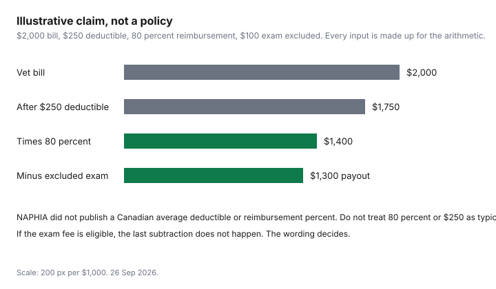

Pets · Canada
How to Read a Canadian Pet Insurance Policy: Pre-Existing Conditions, Deductibles, Reimbursement and Waiting Periods
Owners meet the exclusions when the clinic has already been paid. This page is the reading order for a Canadian pet policy: the words that decide a claim, in the order they usually bite. No insurer’s specimen wording was opened on 26 Sep 2026, so no company’s sentence is quoted and no waiting-period length is treated as national. The numbers that are real are the industry averages on the premium guide, and an illustrative claim that is labelled as arithmetic. The contract you were offered wins every time this page and that contract disagree. Education only, not insurance advice and not veterinary advice.
Disclosure: Pet insurance quote and comparison referral types are an offer type. Saving Optimizer may earn a commission if we later add a partner link. We do not currently claim a partnership with any insurer, broker, or comparison site. We do not rank plans and we do not name a best policy. Education only. The wording in your hands is the contract.
Key takeaways
- No Canadian specimen policy was opened for this draft. Day counts for look-backs, curable conditions, and ligament waiting periods are omitted on purpose.
- NAPHIA’s 2025 Canadian accident-and-illness averages are $1,176 for dogs and $601 for cats. Those averages do not tell you the deductible, the reimbursement percent, or the limit.
- A curable pre-existing clause and an incurable one are different sentences. The symptom-free period, if any, is printed in the wording you have.
- An annual deductible and a per-condition deductible are not the same year’s arithmetic. Lock the type before you compare prices, using the quote spreadsheet.
- After a denial, the insurer’s complaint path comes before the regulator. FSRA’s complaint page, opened 26 Sep 2026, wants a final position letter and says it cannot settle the contract or get you a refund.
Pre-existing and 'curable' conditions: look-back periods and exclusions
A pre-existing condition clause is the insurer’s statement of which signs, diagnoses, or treatments from before the policy, or during a waiting period, will not be paid later. The word to find is the definition, not the marketing line that says accidents are covered. Write down three things from the definition you were given: what counts as a sign, how far back the insurer looks, and whether a condition can ever become eligible again. That backward look is the look-back. Its length was not in NAPHIA’s highlights and was not copied from a specimen here. If your page says a number of months, that number is yours. Do not borrow one from a forum.
Curable and incurable are the fork inside that definition. Some wordings treat a condition as able to be covered again after a symptom-free stretch that the contract itself states. Some treat the condition as excluded for as long as the policy lasts. Both can be labelled “pre-existing” on a summary screen. The summary is not the definition. If you are switching because a premium moved, assume the new contract will apply its own definition to anything already in the clinic’s file, and read that definition before you cancel the old policy. Cancelling first, and discovering the gap second, is the switching risk in the last section. The denied-claim guide is what you do after a denial letter, not a way to rewrite the definition you already accepted.
Deductible types (annual vs per-condition) and reimbursement %
An annual deductible is an amount you pay toward eligible claims in the policy year. After it is met, later eligible claims in that year are not reduced by a second copy of the same deductible, unless the wording says otherwise. A per-condition deductible starts again for each condition the wording counts as separate. Two illnesses in one year can mean two deductibles. A quote that is cheaper per month and uses a per-condition deductible is not comparable to a quote that uses one annual deductible until you have written both down. NAPHIA’s highlights do not publish an average deductible, so this page will not invent a usual $100 or $500. The figure on the chart is labelled illustrative so the arithmetic has a number to subtract.
Reimbursement is the share of the eligible amount the insurer pays after the deductible and after anything the wording removes. It is not a share of the clinic’s total bill if part of the bill is excluded. Eighty percent appears on the chart only as a labelled example. It is not the Canadian average. The highlights do not print one. A 90 percent reimbursement on a tight annual limit can pay less than 80 percent on a higher limit. That is why the next section is not optional. Record the percent and the limit in the same row of the spreadsheet before you sort on price.
Annual and per-condition limits
A limit is the ceiling, not the premium. An annual limit caps what the insurer will pay in the policy year. A per-condition limit caps one condition, sometimes across years. A lifetime limit caps the policy’s whole life with that animal. A contract can use more than one. The reading error is to see “unlimited” in a headline and miss a sub-limit on dental, on a ligament, or on a hereditary condition. Write the ceiling that applies to the invoice you are actually afraid of, not the ceiling in the advertisement.
The premium guide’s five-year flat sum for dog accident-and-illness coverage is $5,880 at the 2025 average, with no increase. A limit under that, or a limit that resets, changes whether five quiet years and one large year look the same. The highlights do not publish a typical Canadian limit. Leave the cell blank until the schedule fills it. If two quotes use different ceilings, they are different products. The spreadsheet’s job is to stop you from calling them the same.
Waiting periods for illness and cruciate ligament injuries
A waiting period is a stretch at the start of the policy, or after a change, when a class of claims is not eligible. Illness waiting periods and ligament waiting periods are often separate sentences. NAPHIA’s product glossary lists ligament tears among accident examples and does not publish how many days an insurer waits. No specimen opened here supplies the missing number. Find both clocks on your wording. Note when each clock starts: the policy date, the date a vet first notes a sign, or the date you raised the limit.
The reason to look for a ligament clock, rather than assuming an accident is covered from day one, is that the clause is how the wording separates a new injury from a problem already under way. That is a description of the contract’s job, not a diagnosis and not a reason to delay care. If a veterinarian says the dog needs treatment during a wait, the medical decision is the veterinarian’s. The policy decides payment. Do not postpone a visit to protect a claim without talking to the clinic. And do not assume a ligament example in an industry glossary deletes the wait in your booklet.
Exam fees, dental and hereditary conditions: common exclusions
Exam fees, dental treatment, and hereditary or congenital conditions are the three exclusions to hunt because they show up on ordinary invoices, not because a survey in this draft counted them. NAPHIA says insurance with embedded wellness may include vaccinations, screening, nutrition consultations, and dental care. The word “may” is why dental does not belong in your head as part of the $1,176 or $601 accident-and-illness average. If the accident-and-illness wording excludes dental, the wellness average is a different product at $2,623 or $1,499, and it still only covers what that wording includes. Exam fees are easy to miss because they sit on the same invoice as the treatment. If they are excluded, the illustrative chart shows them coming off after the reimbursement math, not before you have read the page.
Hereditary and congenital clauses are the breed question in contract form. The premium report does not price breeds. A policy can exclude a condition, cap it, or cover it after a wait. Age limits are the same kind of sentence: a maximum age to enrol, or a change in what continues after a birthday. Write the age rule down at purchase, not at the birthday, when the alternative policies may treat the animal’s history as pre-existing. None of these clauses was quoted from a named insurer here. If your booklet uses different words, follow the booklet.
Premium increases at renewal and switching risks
Industry averages moved in 2025, and your renewal can move differently. NAPHIA’s Canadian accident-and-illness averages rose 9.9 percent for dogs and 9.1 percent for cats from 2024. Accident-only averages fell. Wellness averages rose faster. There is no age table in that report. A renewal that cites age is using the insurer’s own rating, which you can see only on the offer. The renewal guide and the annual review list are the household timing: read the offer before it is the only offer left. They are not authority to demand last year’s price.
Switching replaces one definition of pre-existing with another. A lower premium on a new quote is not a saving if the new wording excludes the condition you already claim. Get the new definition, the new waits, and the new limit in writing, and keep the old policy until the new one is in force and the waits you care about have been explained. If a claim is denied, start with the insurer’s complaint officer and keep notes. FSRA’s public complaint page, opened 26 Sep 2026, says the company sends a final position letter, and that FSRA cannot settle a contract disagreement, issue a refund, or get compensation for you. The same page points life-insurance complaints to the OmbudService for Life and Health Insurance and other insurance complaints toward the General Insurance OmbudService or, for mutuals, the Mutual Insurance Companies OmbudService. This draft did not open a pet-policy classification that picks one of those doors. Ask the insurer which external reviewer applies, and use the denial guide for the paper trail. Other provinces have their own regulators. FSRA is Ontario’s page, not a national court.
| Term | What it means on the page | Question to ask | Red flag |
|---|---|---|---|
| Pre-existing, curable or incurable | Which earlier signs are excluded, and whether a symptom-free period in the contract can reopen them. | Is this condition curable under your definition, and where is the symptom-free length written? | A brochure that says “curable” and a definition that never brings the condition back. |
| Look-back | How far before the start date the insurer reads the history. | What date does the look-back start from, and which records do you require? | A look-back you cannot find, described only as “we review history.” |
| Annual vs per-condition deductible | One deductible in the year, or one for each condition the wording separates. | If two illnesses happen this year, how many deductibles apply? | Comparing a monthly price across two deductible types without writing both down. |
| Reimbursement percent | The share of the eligible amount after the deductible and exclusions. Not published as a Canadian average in the NAPHIA highlights. | Is the percent applied to the vet’s bill or to an allowed amount? | A high percent advertised on a bill that is mostly excluded. |
| Annual, per-condition, or lifetime limit | The ceiling for the year, the condition, or the life of the policy. | Which ceiling applies to dental, ligaments, and hereditary conditions? | “Unlimited” in a headline with a sub-limit in the schedule. |
| Waiting periods | Time at the start when a class of claims is not eligible. Illness and ligament clocks may differ. No day count is printed here. | When does each clock start, and which conditions does it cover? | Assuming an accident example in an industry glossary erases the wait. |
| Exam fees | The consultation charge on the invoice, which may be outside the eligible amount. | Is the exam fee eligible, or only the treatment? | A paid claim that ignored the largest line on a short visit. |
| Dental | Teeth and gums. Wellness products may include dental; accident-and-illness averages do not prove they do. | Is dental inside this product or only inside a wellness add-on? | Counting the $1,176 or $601 average as if it included the $1,320 dental line from the 2025 Ontario cost sheets. |
| Hereditary or congenital | Conditions the wording ties to inheritance or to birth, whether excluded, capped, or waited out. | Name the condition you are worried about and ask which sentence applies. | A breed story from a forum standing in for the clause. |
| Age limits | A maximum age to start, or a change after a birthday. Not an age-premium table in the NAPHIA highlights. | What happens at the next birthday, in writing? | Switching at that birthday without reading the new pre-existing definition. |
| Renewal | The offer for the next term. Industry accident-and-illness averages rose 9.9 percent and 9.1 percent in 2025. Your offer can differ. | What is this year’s premium, deductible, and limit, side by side with last year’s? | Letting it renew because the industry average was the only number you know. |

Sources & date stamps
- NAPHIA, 2026 State of the Industry highlights, footer 21 Jun 2026, 2025 Canadian premiums and product examples, opened 26 Sep 2026. Accident examples include ligament tears. Wellness plans may include dental. No deductible, reimbursement percent, limit, waiting period, or age band was in the highlights. No insurer wording is quoted.
- Illustrative claim: $2,000 − $250 = $1,750; × 0.80 = $1,400; − $100 excluded exam = $1,300. Labelled illustrative. Not a quote.
- FSRA, “Submit a complaint to FSRA,” opened 26 Sep 2026. Final position letter from the insurer. FSRA cannot settle a contract disagreement, issue a refund, or get compensation. Life complaints are pointed to OLHI. Other insurance complaints are pointed to GIO, and mutuals to MICO. No pet-specific door was printed on that page. Complaint form GF-012 page lists a last update of 7 Feb 2025.
- Specimen policy PDFs from named Canadian pet insurers were not opened. Day counts that would have come from them are dropped.
Frequently asked questions
What counts as a pre-existing condition?
The definition in your wording, not a general rule this page can print. No specimen policy was opened on 26 Sep 2026. Look for which signs count, how far back the insurer looks, and whether the clause calls the condition curable after a symptom-free period that the contract states. A summary that says conditions can be covered later is not the definition. If you switch insurers, the new definition applies to the history the new insurer is allowed to read.
What's the difference between a per-condition and an annual deductible?
An annual deductible is met once in the policy year for eligible claims, unless your wording says otherwise. A per-condition deductible can apply again to each condition the wording treats as separate, so two illnesses can mean two deductibles. NAPHIA’s 2025 highlights do not publish an average deductible, so this page does not call any dollar amount typical. Write the type down before you compare monthly prices. The illustrative chart uses a $250 deductible only as arithmetic.
Why are there waiting periods for ligament injuries?
The clause is how a wording separates a new accident from a ligament problem already under way. NAPHIA’s glossary lists ligament tears among accident examples and does not print a number of days. No specimen opened here prints one either. Find the clock on your page, including when it starts. The wait is about payment. It is not a reason to delay treatment your veterinarian says the animal needs.
Are exam fees and dental covered?
Only if the wording you hold says so. Exam fees often sit on the same invoice as treatment and can still be excluded. Dental is called out because NAPHIA says wellness plans may include it, which means the 2025 accident-and-illness averages of $1,176 and $601 do not prove dental is inside them. The Ontario 2025 adult dental line of $1,320 is a different document, a cost estimate, not a covered benefit. Read the dental sentence before you add a wellness premium.
Can I switch insurers later?
You can ask for a new quote. The risk is the new pre-existing definition, the new waiting periods, and a gap if you cancel the old policy first. NAPHIA’s accident-and-illness averages rose 9.9 percent for dogs and 9.1 percent for cats in 2025, but your renewal can differ, and the highlights have no age table. After a denial, FSRA’s page wants the insurer’s final position letter and says FSRA cannot settle the contract or get you a refund. Confirm which external reviewer applies to a pet policy. This page does not rank a company to switch to.